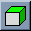
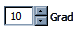

|
|
1. Grundlegende Bedienung des Programms |
|
|
Mit Hilfe der linken Maustaste (MT) können Objekte problemlos in die gewünschte
Position geschoben und rotiert werden. Die Art der Verschiebung oder Rotation wird über die Toolbar oder
die entsprechenden Tastaturkürzel gewählt. |
|
Die rechte Maustaste (alternativ auch Doppelklick der linken MT) selektiert ein Objekt unter dem Mauszeiger.
Bestimmte Funktionen – wie Gruppieren oder Degruppieren – sind abhängig von den selektierten
Gegenständen. Außerdem kann die rechte Maustaste noch zum Bewegen der Kamera eingesetzt werden,
falls Sie über kein Mausrad verfügen sollten. |
|
Die mittlere Maustaste steuert generell die Bewegung und Rotation der Kamera. In der Draufsicht kann der Blickwinkel
jedoch nicht verändert werden, sondern in jedem Modus nur die Entfernung per Mausrad (siehe unten) und die Verschiebung der Unterlage. |
|
Um schnell in die Szene zu zoomen oder wieder aus ihr herauszukommen, kann das Mausrad verwendet
werden. Es gibt auch noch die Möglichkeit, die obere Ansicht im Programm mit den Tasten BILD AUF und BILD AB
zu zoomen. Generell wird aber eine 3-Tasten-Maus mit Mausrad zur Verwendung empfohlen. |
| zurück |
2. Die Grundfunktionen der Toolbar und des Menüs |
Hier finden Sie die Beschreibung aller Funktionen, über die jedes Programm
verfügt. Standard-Formate dieser Software sind das OPX – für das Speichern
und Laden von kompletten Räumen – und das OAX-Format – für den Export und
Import von einzelnen Objekten. Zusätzlich verfügt das Programm über eine Importfunktion
für WaveFront OBJ-Dateien, die dann bequem in die eigene Bibliothek importiert werden.
Jede Funktion der Toolbar kann auch wie gewohnt über das Menü (Datei und Bearbeiten) erreicht werden.
|
|
Neuen Raum erstellen und aktuellen leeren |
 |
Neuen Raum aus dem OPX Format öffnen |
 |
Aktuellen Raum im OPX Format speichern |
 |
Eine Objekt-Aktion rückgängig machen |
 |
Eine Objekt-Aktion wiederherstellen |
| zurück |
3. Manipulation von Objekten und der Kamera |
Im Folgenden Abschnitt werden die Transformationen für die Objekte und die Kamera
beschrieben. In dieser Software wird die gewählte Operation (Verschieben oder Drehen) automatisch
auf die Kamera mit übertragen. Das heißt, die Kamera – die über die mittlere
oder rechte Maustaste gesteuert werden kann – folgt der eingestellten Verschiebung bzw. Rotation.
Die rot gefärbten Flächen symbolisieren die jeweilige Ebene, in der das Objekt verschoben werden kann. Die
den grünen Flächen stellen die Ebenen dar, in denen das Objekt rotiert werden kann.
|
|
Rotation der selektierten Objekte zurücksetzen und sie wieder auf den Boden stellen |
|
Verschieben der Objekte und der Kamera (mit der mittleren
Maustaste) in der rot markierten Ebene (hier X-Z-Ebene) |
 |
Verschieben der Objekte und der Kamera (mit der mittleren
Maustaste) in der rot markierten Ebene (hier X-Y-Ebene) |
 |
Rotieren der Objekte und der Kamera (mit der mittleren
Maustaste) in der grün markierten Ebenen (in der X- und Z-Achse) |
|  |
Rotieren der Objekte und der Kamera (mit der mittleren
Maustaste) in der grün markierten Ebenen (in der X- und Y-Achse) |
 |
Wände können Sie durch Drücken und Ziehen mit der linken MT nur in der oberen
Ansicht (Draufsicht) zeichnen. Das Programm merkt sich beim Zeichnen einer Wand immer den Endpunkt: Bei einem Einfach-Klick
auf die nächste gewünschte Position wird ein weiteres Wandsegment erstellt. |
| zurück |
4. Veränderungen der Kameraperspektiven |
Die Kamera – speziell in der Draufsicht (obere Ansicht im Programm) – kann über
die Knöpfe mit dem Lupensymbol gezoomt werden. Der Rücksetz-Button setzt jedoch beide Ansichten auf
die Ausgangsposition zurück, falls Sie sich einmal "verflogen" haben sollten. Die Schnappfunktion
ist standardmäßig beim Starten des Programms aktiv und auf 500mm und 45° eingestellt – sie gilt
jedoch nur für Objekte und nicht für die Kamera.
|
|
In die Draufsicht hineinzoomen |
|
Aus der Draufsicht herauszoomen |
|
Beide Kameras (in der Draufsicht und der 3D Darstellung) in die Ausgangsposition
zurücksetzen |
|
Die Schnappfunktion für das gesetzte Raster (siehe unten)
ein- oder ausschalten |
 |
Einstellung des Rasters, auf dem die Objekte einrasten
Bereich [10mm < x < 5000mm] |
|  |
Einstellung der Gradeinteilung, auf die die Objekte bei Rotation einrasten
Bereich [10° < alpha < 90°] |
|
Programm beenden |
| zurück |
5. Tastaturkürzel im Überblick |
| Das folgende Kapitel behandelt alle Funktionen, die per Tastaturkürzel
(sogenannte Shortcuts) erreichbar sind. Dabei wird in Standardfunktionen – die von allen
gängigen Programmen verwendet werden – und erweiterte Funktionen unterschieden, die
speziell für diese Software entwickelt wurden. |
5.1 Standardfunktionen |
| ALT + F4 |
Programm beenden |
| F1 |
Diese Kurzhilfe, die Sie gerade lesen |
| ALT + F1 |
Über die Entwickler |
| ENTF |
Selektierte Objekte löschen |
| STRG + X |
Selektierte Objekte ausschneiden |
| STRG + V |
Selektierte Objekte einfügen |
| STRG + C |
Selektierte Objekte kopieren |
| STRG + D |
Selektierte Objekte sofort klonen |
| STRG + H |
Selektierte Objekte verstecken |
| STRG + N |
Neuen Raum erstellen |
| STRG + O |
Raum öffnen |
| STRG + S |
Raum speichern |
| STRG + Z |
Rückgängig |
| STRG + Y |
Wiederherstellen |
| zurück |
5.2 Sonderfunktionen |
| STRG + R |
Selektierte Objecte zurücksetzen (Rotation und Bodennähe) |
| STRG + G |
Gruppe aus den selektierten Objekten erstellen |
| STRG + F |
Selektierte Gruppe wieder auflösen |
| STRG + I |
Ein Objekt im OAX Format importieren |
| ALT + I |
Ein Objekt im OBJ Format importieren |
| ALT + O |
Einen Raum im OBJ Format exportieren
(zum Beispiel für das Rendern in einem Raytracer) |
| BILD AUF |
In der Draufsicht heranzoomen |
| BILD AB |
Aus der Draufsicht herauszoomen |
| HOME / POS1 |
Kameras in die Ausgangsposition zurücksetzen |
| F4 |
Schnappfunktion ein- und ausschalten |
| F5 |
Verschieben in XZ-Richtung |
| F6 |
Verschieben in XY-Richtung |
| F7 |
Rotieren in XZ-Achsen |
| F8 |
Rotieren in XY-Achsen |
| F9 |
Wände in der Draufsicht zeichnen |
| F10 |
Schatten ein- und ausschalten |
| F12 |
Einen Screenshot der 3D Ansicht erstellen |
| STRG + 1 |
Einen Kegel erstellen |
| STRG + 2 |
Einen Zylinder erstellen |
| STRG + 3 |
Einen Kubus erstellen |
| STRG + 4 |
Eine Pyramide erstellen |
| STRG + 5 |
Eine Kugel erstellen |
| zurück |
6. Tipps und Trick im Umgang mit dem Programm |
| Tipp #1 |
6.1 Der Umgang mit der Maus
Falls Sie noch Schwierigkeiten mit dem Umgang der Maus haben sollten, haben wir für
Sie einige Tipps, die Ihnen das Platzieren der Objekte erleichtern. Wählen Sie zunächst
ein gröberes Raster für die Schnappfunktion (zum Beispiel 1000mm). Jetzt werden alle
verschobenen Gegenstände in einem Meter Abstand einrasten und so die Positionierung erleichtern.
Das Gleiche gilt für das Drehen von Objekten: Stellen Sie einfach 45° oder gleich 90°
ein, um die Gegenstände nur in entsprechenden Winkeln einrasten zu lassen. |
| zurück |
| Tipp #2 |
6.2 Massenfabrikation mit Gruppen
Falls Sie einmal einen Raum einrichten möchten, der über viele identische
Objekte verfügen sollte, können Sie die Duplikat-Funktion (STRG + D) auch
auf zuvor gruppierte Elemente anwenden. Holen Sie sich dazu einfach aus der Bibliothek
die gewünschten Objekte in die Szene und arrangieren Sie diese zuerst zu
einer geplanten Einheit (zum Beispiel einen Tisch mit einem Laptop darauf und einem
Stuhl davor). Selektieren Sie jetzt alle Objekte und drücken STRG + G um die Gruppe
zu erzeugen. Wenn die die soeben erstellte Gruppe wieder selektieren, können Sie
mit der Klon-Funktion jetzt die komplette Gruppe beliebig oft vervielfältigen. |
| zurück |
7. Glossar der verwendeten Symbole |
|
Eine geladene Bibliothek |
|
Eine Kategorie in der jeweiligen Bibliothek |
|
Ein Objekt in der Bibliothek und im Raum |
|
Die Wurzel des gesamten Szenenbaums |
|
Der eigentliche Raum (die Szene) |
|
Der Papierkorb für gelöschte Objekte |
|
| 7.1 Die Objekt-Bibliothek |
|
Links abgebildet sehen Sie einen Ausschnitt aus der Bibliothek. Jedes importierte
Objekt als OBJ oder OAX wird generell in dieser Bibliothek abgelegt und steht dann für weitere
Räume zur Verfügung. Über das Kontextmenü (rechte Maustaste) können Sie
das gewünschte Objekt dann in Ihren Raum laden.
Achtung! Beim Laden eines Raums aus dem OPX-Format werden Sie standardmäßig aufgefordert,
einen Namen für eine Kategorie anzugeben, in die dann die im Raum enthaltenen Objekte eingefügt
werden. Dieses Vorgehen ist erforderlich, da für den späteren Export wieder die Objekte aus
der eigenen Datenbank gelesen werden müssen. Ihre Bibliothek wächst somit bei jedem Import und
Öffnen eines Raums, Duplikate werden jedoch nicht erstellt – falls Sie bereits über die
entsprechenden Modelle verfügen.
|
|
| zurück |
| 7.2 Die Szenen-Bibliothek |
|
|
| zurück |